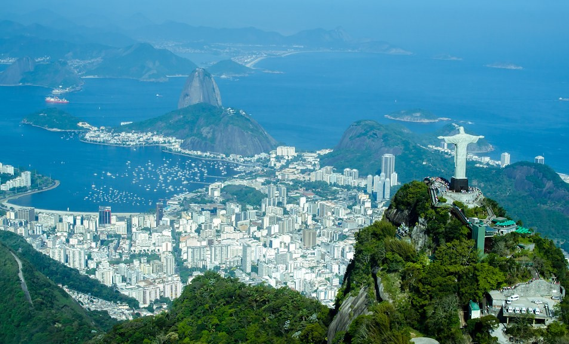

This is Rio de Janeiro

Founded in 1565 by the Portuguese, the city was initially the seat of the
Captaincy of Rio de Janeiro, a domain of the Portuguese Empire. In 1763,
it became the capital of the State of Brazil, a state of the Portuguese
Empire. In 1808, when the Portuguese Royal Court moved to Brazil, Rio de
Janeiro became the seat of the court of Queen Maria I of Portugal. She
subsequently, under the leadership of her son the prince regent John VI of
Portugal, raised Brazil to the dignity of a kingdom, within the United
Kingdom of Portugal, Brazil, and Algarves. Rio remained as the capital of
the pluricontinental monarchy until 1822, when the Brazilian War of
Independence began. This is one of the few instances in history that the
capital of a colonizing country officially shifted to a city in one of its
colonies. Rio de Janeiro subsequently served as the capital of the
independent monarchy, the Empire of Brazil, until 1889, and then the
capital of a republican Brazil until 1960 when the capital was transferred
to Brasília.
Rio de Janeiro has the second largest municipal GDP in the country, and
30th-largest in the world in 2008. This is estimated at R$343 billion. In
the city are the headquarters of Brazilian oil, mining, and
telecommunications companies, including two of the country's major
corporations, Petrobras and Vale, and Latin America's largest telemedia
conglomerate, Grupo Globo. The home of many universities and institutes,
it is the second-largest center of research and development in Brazil,
accounting for 17 percent of national scientific output according to 2005
data. Despite the high perception of crime, the city actually has a lower
incidence of crime than most state capitals in Brazil.
Rio de Janeiro is one of the most visited cities in the Southern
Hemisphere and is known for its natural settings, carnival, samba, bossa
nova, and balneario beaches such as Barra da Tijuca, Copacabana, Ipanema,
and Leblon. In addition to the beaches, landmarks include the giant statue
of Christ the Redeemer atop Corcovado mountain, named one of the New Seven
Wonders of the World; Sugarloaf Mountain with its cable car; the
Sambódromo (Sambadrome), a permanent grandstand-lined parade avenue which
is used during Carnival; and Maracanã Stadium, one of the world's largest
football stadiums. Rio de Janeiro was the host of the 2016 Summer Olympics
and the 2016 Summer Paralympics, making the city the first South American
and Portuguese-speaking city to ever host the events, and the third time
the Olympics were held in a Southern Hemisphere city. The Maracanã Stadium
held the finals of the 1950 and 2014 FIFA World Cups, the 2013 FIFA
Confederations Cup, and the XV Pan American Games. The city will host the
G20 summit in 2024, and the FIFA Women's World Cup in 2027.
History
Europeans first encountered Guanabara Bay on 1 January 1502 (hence Rio de
Janeiro, "January River"), during a Portuguese expedition under explorer
Gaspar de Lemos, captain of a ship in Pedro Álvares Cabral's fleet, or
under Gonçalo Coelho. Allegedly the Florentine explorer Amerigo Vespucci
participated as observer at the invitation of King Manuel I in the same
expedition.
In 1555, one of the islands of Guanabara Bay, now called Villegagnon
Island, was occupied by 500 French colonists under the French admiral
Nicolas Durand de Villegaignon. Consequently, Villegagnon built Fort
Coligny on the island when attempting to establish the France Antarctique
colony. Eventually this French settlement became too much of a threat to
the established Portuguese colony and in 1560 the order was made to get
rid of them. A years-long military aggression was then initiated by the
new Governor General of Brazil Mem De Sa, and later continued by his
nephew Estacio De Sa. On 20 January 1567, a final defeat was imposed on
the French forces and they were decisively expelled from Brazil for good.
The city of Rio de Janeiro proper was founded on 1 March 1565 by the
Portuguese, led by Estácio de Sá, including Antônio de Mariz. It was named
São Sebastião do Rio de Janeiro, in honor of St. Sebastian, the saint who
was the namesake and patron of the Portuguese then-monarch Sebastião. Rio
de Janeiro was the name of Guanabara Bay. Until early in the 18th century,
the city was threatened or invaded by several mostly French pirates and
buccaneers, such as Jean-François Duclerc and René Duguay-Trouin.
In the late 17th century, still during the Sugar Era, the Bandeirantes
discovered gold and diamonds in the neighboring captaincy of Minas Gerais,
thus Rio de Janeiro became a much more practical port for exporting wealth
(gold, precious stones, besides the sugar) than Salvador, Bahia, much
farther northeast. On 27 January 1763, the colonial administration in
Portuguese America was moved from Salvador to Rio de Janeiro. The city
remained primarily a colonial capital until 1808, when the Portuguese
royal family and most of the associated Lisbon nobles, fleeing from
Napoleon's invasion of Portugal, moved to Rio de Janeiro.
Geography
Rio de Janeiro is near the west end of a strip (from Cabo Frio to just
east of Ilha Grande) of Brazil's Atlantic coast close to the Tropic of
Capricorn where the shoreline is oriented east and west; the city thus
faces largely south. It was founded at the entrance to an inlet, Guanabara
Bay (Baía de Guanabara), which is marked by a point of land called Sugar
Loaf (Pão de Açúcar) a "calling card" of the city.
The city has parks and ecological reserves such as the Tijuca National
Park, the world's first urban forest and UNESCO Environmental Heritage and
Biosphere Reserve; Pedra Branca State Park, which houses the highest point
of Rio de Janeiro, the peak of Pedra Branca; the Quinta da Boa Vista
complex; the Botanical Garden; Rio's Zoo; Parque Lage; and the Passeio
Público, the first public park in the Americas. In addition the Flamengo
Park is the largest landfill in the city, extending from the center to the
south zone, and containing museums and monuments, in addition to much
vegetation.
Since 1961, the Tijuca National Park (Parque Nacional da Tijuca), the
largest city-surrounded urban forest and the second largest urban forest
in the world, has been a National Park. The largest urban forest in the
world is the Floresta da Pedra Branca (White Rock Forest), which is
located in the West Zone of Rio de Janeiro.
Due to the high concentration of industries in the metropolitan region,
the city has faced serious problems of environmental pollution. The
Guanabara Bay has lost mangrove areas and suffers from residues from
domestic and industrial sewage, oils and heavy metals. Although its waters
renew when they reach the sea, the bay is the final receiver of all the
tributaries generated along its banks and in the basins of the many rivers
and streams that flow into it. The levels of particulate matter in the air
are twice as high as that recommended by the World Health Organization, in
part because of the large numbers of vehicles in circulation.
The waters of Sepetiba Bay are slowly following the path traced by
Guanabara Bay, with sewage generated by a population of the order of 1.29
million inhabitants being released without treatment in streams or rivers.
With regard to industrial pollution, highly toxic wastes, with high
concentrations of heavy metals mainly zinc and cadmium have been dumped
over the years by factories in the industrial districts of Santa Cruz,
Itaguaí and Nova Iguaçu, constructed under the supervision of State
policies.
The Marapendi lagoon and the Rodrigo de Freitas Lagoon have suffered with
the leniency of the authorities and the growth in the number of apartment
buildings close by. The illegal discharge of sewage and the consequent
deaths of algae diminished the oxygenation of the waters, causing fish
mortality.
There are, on the other hand, signs of decontamination in the lagoon made
through a public-private partnership established in 2008 to ensure that
the lagoon waters will eventually be suitable for bathing. The
decontamination actions involve the transfer of sludge to large craters
present in the lagoon itself, and the creation of a new direct and
underground connection with the sea, which will contribute to increase the
daily water exchange between the two environments. However, during the
Olympics the lagoon hosted the rowing competitions and there were numerous
concerns about potential infection resulting from human sewage.